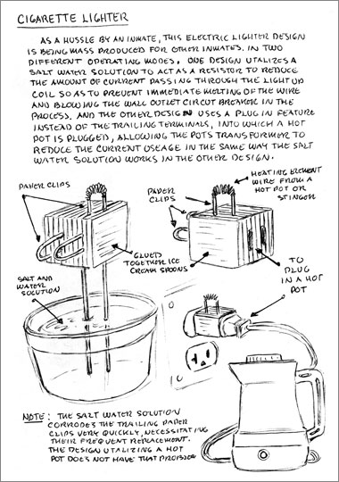

basekamp space > Events
Prisoners' Inventions
|
 |
|
Friday 2 April Saturday 3 April exhibition runs 2 April - 7 May 2004 Three years ago Temporary Services invited Angelo, an incarcerated artist, to write and illustrate a booklet about the ingenious, practical, and sometimes bizarre things he has seen prisoners make. Angelo generated more than 100 pages of drawings and text - representing 78 different inventions or skills. The collection offers a glimpse into the social environment of prison, where inventiveness and ingenuity are needed to satisfy even the most basic human desires. This exhibition will include many of Angelo’s drawings and writings, along with facsimiles of the inventions constructed by Temporary Services. At Angelo’s request, a full-size copy of his prison cell will also be featured. The cell was originally built by fabricators at the Massachusetts Museum of Contemporary Art who followed Angelo’s drawings and measurements. Left: Electric cigarette lighter with saltwater and hot pot resistor variations, 2003. Ballpoint pen drawing on notebook paper, |